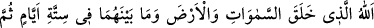
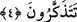

muhabbet, (mâsivâyı) terk ve fenâ ile gerçekleşir. Birincisi umûm ehlinin/avâmın,
ikincisi ise husûs ehlinin/havâssın hâlidir. Elbette ikincisi, birincisinden daha kâmildir.
Şu halde sana düşen, murâda ermek için irşâdı kabûl etmektir. Hevâ ehlinin peşine
düşmekten ise sakın. Çünkü onlar hidâyet ehlinden değildirler. Kendisi ölü olan kimse,
diriye telkin veremez. Ölüye ancak diri olan telkin verebilir.
Rivâyet edilir ki Necmeddîn Isfahânî (k.s.), Mekke’de sâlihlerden birinin
cenâzesinde bulundu. Cenâze defnedildikten sonra birisi telkin vermek için oturdu. Şeyh
Necmeddîn hiç âdeti olmadığı halde güldü. Yanında bulunan dostlarından birisi, ısrarla
gülmesinin sebebini sordu. Biraz geçtikten sonra Şeyh Necmeddîn şöyle dedi: “Telkin
veren kişi kabrin başına telkin vermek üzere oturunca, kabirde bulunan zâtın şöyle
dediğini işittim: “Ölünün diriye telkin vermesine şaşmıyor musunuz?”
Sâib der ki:
Dert sâhibi olmayanlardan kendi derdine ilâç ummak,
Birinin ayağındaki dikeni akrep iğnesiyle çıkartmasına benzer.
Molla Câmî ise şöyle demiştir:
Zamanenin hayırsız adamlarının sözüne bakıp da gururlanma
Sâmirî gibi buzağının sesine gidip de doğru yoldan ayrılma
Hâfız da der ki:
Aşk yolunda şeytanın vesveseleri çoktur.
Dikkat et, gönül kulağını meleğin getirdiği habere ver.
Yüce Allah’tan bizi kendisine ulaşanlardan ve güzel hitâbına lâyık olanlardan
kılmasını, dalâletten ve dalâlet ehli ile beraberlikten korumasını, sapıklıktan ve
sapıtmış kimselere uymaktan muhâfaza etmesini niyâz ederiz. Hidâyete erdiren ve
doğruyu gösteren ancak O’dur.
4. Gökleri, yeri ve bunların arasındakileri altı günde (devirde) yaratan, sonra
Arş’a istivâ eden Allah’tır. O’ndan başka ne bir dost ne de bir şefaatçiniz vardır.
Artık düşünüp öğüt almaz mısınız?
“Gökleri, yeri” yâni ulvî ve süflî bütün varlıkları “ve bunların arasındakileri”